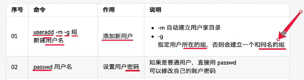

注：创建用户/删除用户/修改其它用户密码 的终端命令都需要通过sudo执行
创建用户

如果创建时出错，删除用户，重新创建

查看创建的用户信息

用户信息保存在：/etc/passwd文件中
查看用户信息
1.id[用户名]：查看用户UID（用户代号）和GID（组代号）信息
如果没有用户名，则查看当前用户的信息
2.who：查看当前所有登录的用户列表
3.whoami：查看当前登录用户的账户名


usermod
可以用来设置用户的主组/附加组和登录shell，命令格式如下：
主组：通常在新建用户时指定，在etc/passwd的第4列GID对应的组
附加组：在etc/group中最后一列表示该组的用户列表，用于指定用户的附加权限
设置了用户的附加组之后，需要重新登录才能生效
usermod -g 组 用户名 修改主组
usermod -G 组 用户名 修改附加组
usermod -s /bin/bash 修改用户登录shell
uermod -G sudo 用户名
使用useradd添加的用户是没有权限使用sudo以root身份执行命令的，
可以用以上命令添加到sudo附加组中
指定用户登录shell
登录使用的Shell,就是登录之后，使用的终端命令，ubuntu默认是dash
usermod -s /bin/dash 用户名
which
- /etc/passwd 是用于保存用户信息的文件
- /usr/bin/passwd 是用于修改用户密码的程序
which命令可以查看执行命令所在位置，例如：
which ls------/bin/ls
which passwd------/usr/bin/passwd

切换用户
1.su - 用户名 ：切换用户，并且切换目录，-可以切换到用户家目录
2.exit ：退出当前登录账户

修改文件权限
1.chown ：修改拥有者
2.chgrp ：修改组
3.chmod ：修改权限
1.chown 用户名 文件名|目录名
2.chgrp -R 组名 文件名|目录名
3.chmod -R 755 文件名|目录名
chmod +/-rwx 文件名|目录名：直接修改读写权限，但是不能精确到 拥有者|组|其它